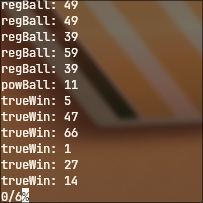

Written in: 
Hello! This was my first ever project. Unlike the other ones, this one actually has a backstory. Basically, after finishing learning C, I asked my dad what kind of project I should do, and he told me to make something that predicts the powerball chances. Of course this is impossible, instead I made a mock version of the powerball. Truly, I do not know how powerball works, I modeled it after what my dad told me. Anyway, the program uses rand() a lot which is fine I guess. I actually recently reworked the program, so there is no redundancy in the code.
Heres the link to the project: Mock-Lottery-Ticket
And heres the output.
